Best for couples
Best for couples
Bath city centre
Abbey Views
A stylish apartment for two with views of the 18th-century Abbey, two minutes from the Roman Baths and Thermae Spa.
- 2 guests
- 1 bedroom
- 1 bathroom
A light-filled apartment facing Bath Abbey for a city break, or a five-bedroom manor in the countryside for the whole group.
Best for couples
A stylish apartment for two with views of the 18th-century Abbey, two minutes from the Roman Baths and Thermae Spa.
 Best for groups & families
Best for groups & families
A five-bedroom manor a short drive from Bath, with large gardens, a BBQ, a fire pit and free parking on site.
Tap any place to open it in Google Maps. Walking times are from Abbey Views.
The view from your window, up close. Admire the fan-vaulted ceiling and the famous "Jacob's ladder" west front.
Open in Google Maps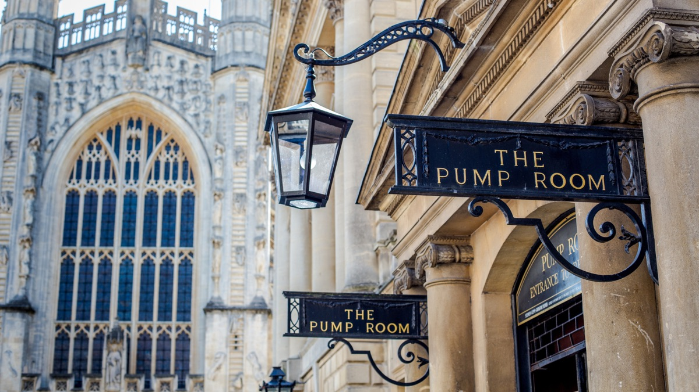
1 min walkGeorgian elegance for afternoon tea or brunch, with live music and a taste of the spa waters.
Open in Google Maps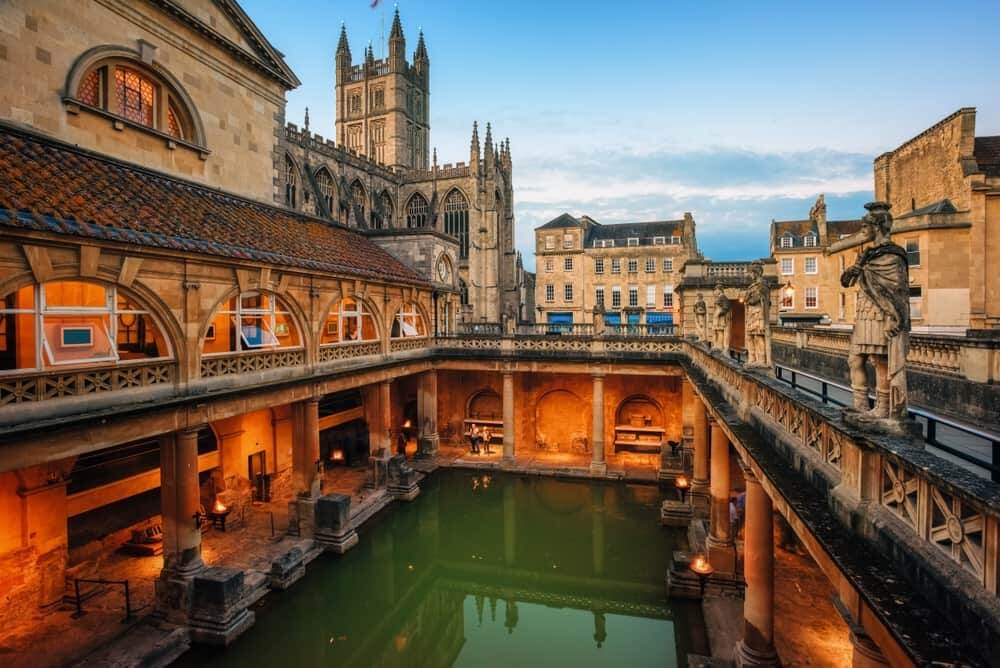
2 min walkThe best-preserved Roman spa in northern Europe, with the sacred spring still flowing. The city's must-see.
Open in Google Maps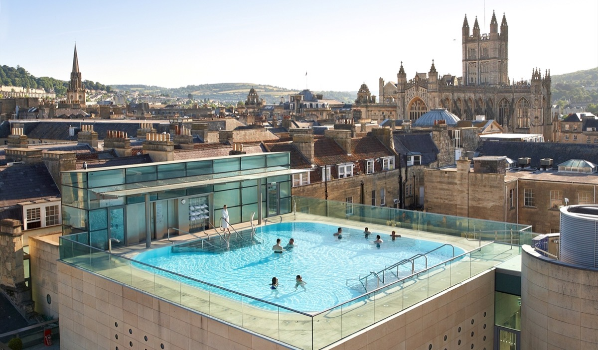
2 min walkSoak in naturally warm mineral water, with a rooftop pool that looks out across the city.
Open in Google Maps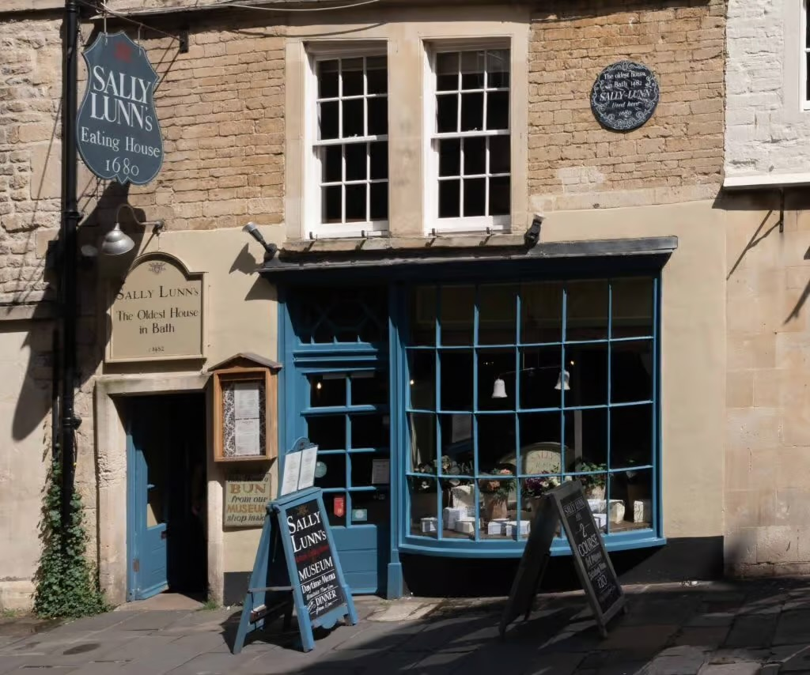
3 min walkBath's famous historic eating house, home of the Sally Lunn bun, in one of the city's oldest houses.
Open in Google Maps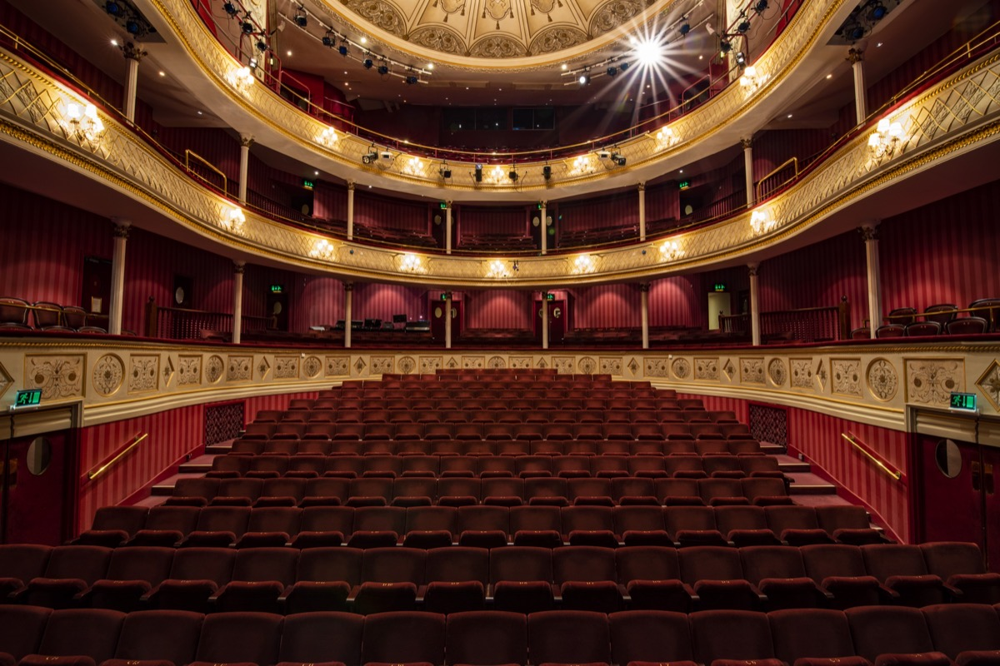
4 min walkA beautiful Georgian theatre staging West End tours, plays and pantomime year-round.
Open in Google Maps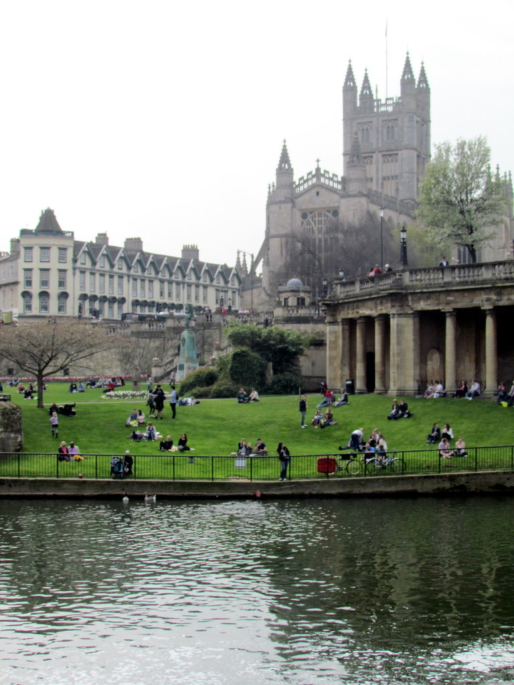
5 min walkA riverside garden right by Pulteney Bridge. Perfect for a picnic, a deckchair and the weir views.
Open in Google Maps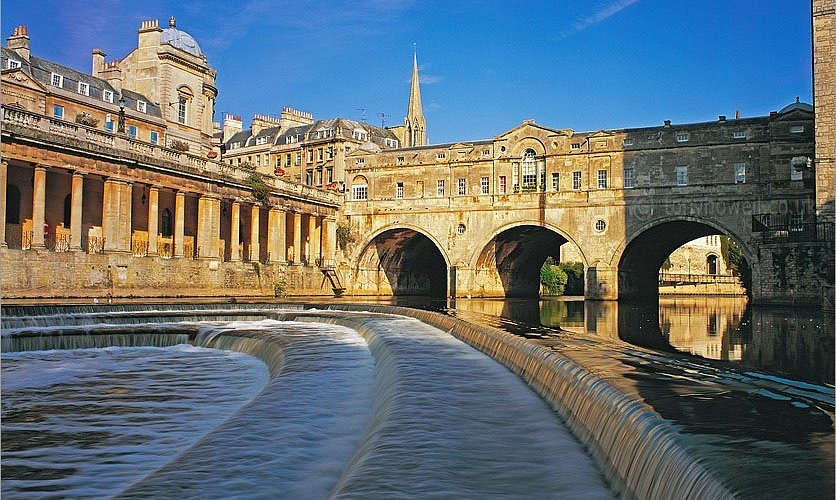
6 min walkOne of the few bridges in the world lined with shops on both sides. Best photographed from the weir.
Open in Google Maps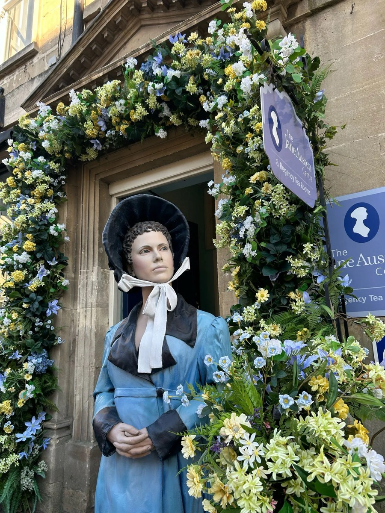
10 min walkStep into Regency Bath and the author's time in the city. Look out for costumed guides on Gay Street.
Open in Google Maps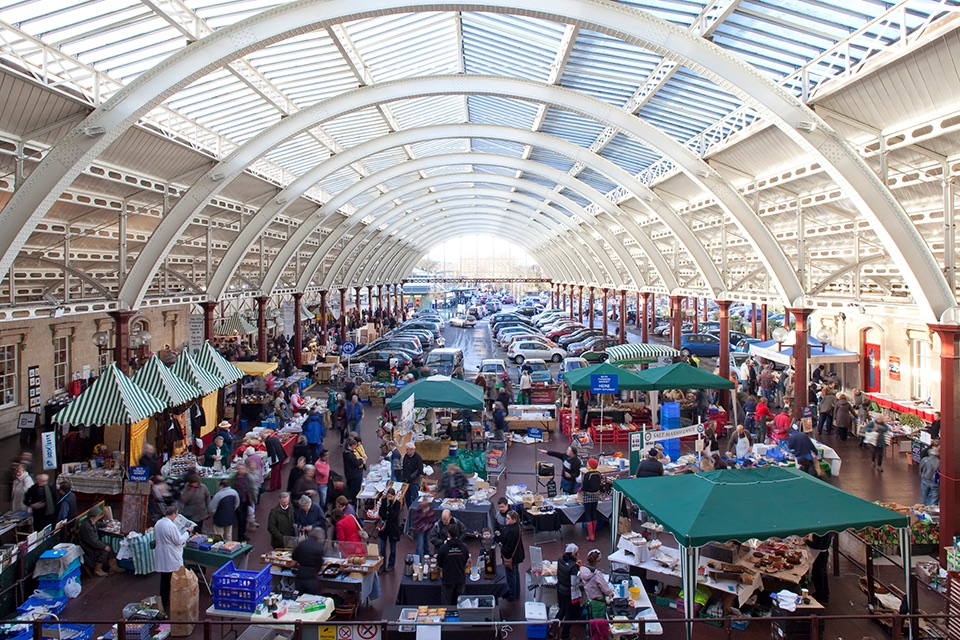
10 min walkLocal producers, street food and independent stalls under a restored Victorian station roof, at weekends.
Open in Google MapsThirty sweeping Georgian townhouses around a lawn that rolls down to Royal Victoria Park. Go early and you might spot the hot-air balloons.
Open in Google Maps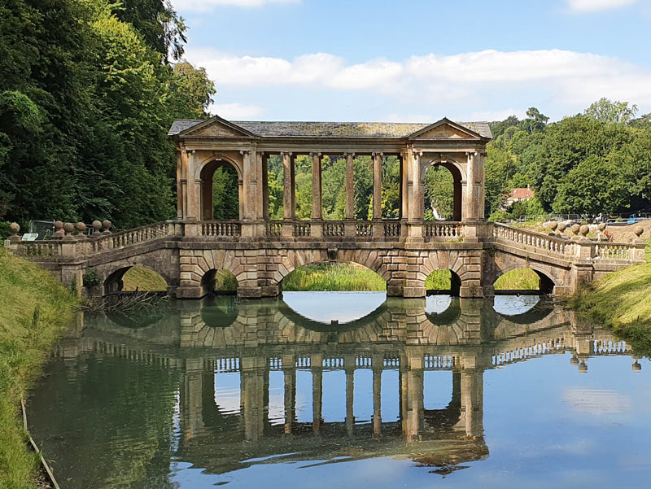
Short bus or taxi rideA Palladian garden with a picture-perfect view over the city, and the start of the Bath Skyline countryside trail.
Open in Google Maps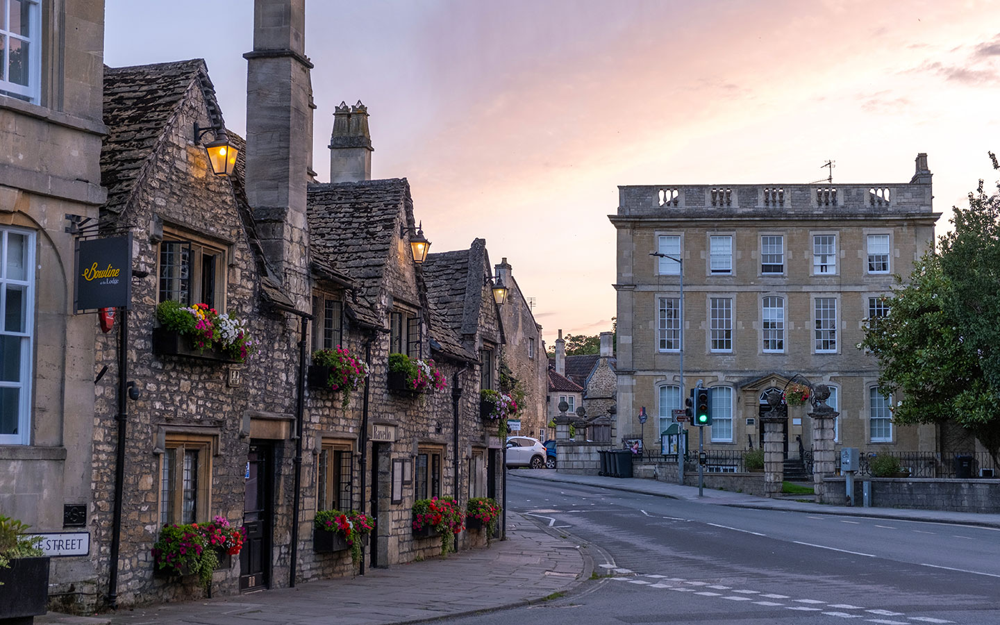
Near the ManorA honey-stone town on the River Avon, with a medieval Tithe Barn, a tiny Saxon church and riverside pubs.
Open in Google Maps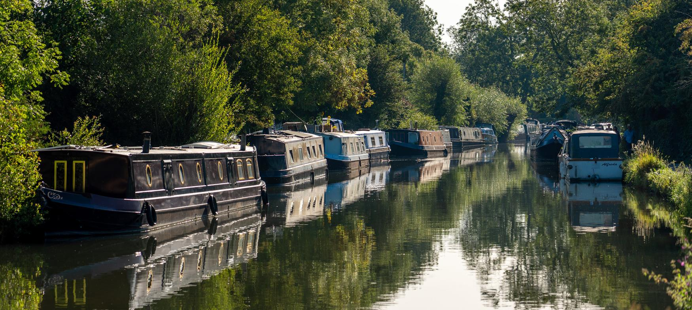
Near the ManorFlat towpath walks and bike rides past narrowboats to the Avoncliff Aqueduct, with canal-side cafés along the way.
Open in Google Maps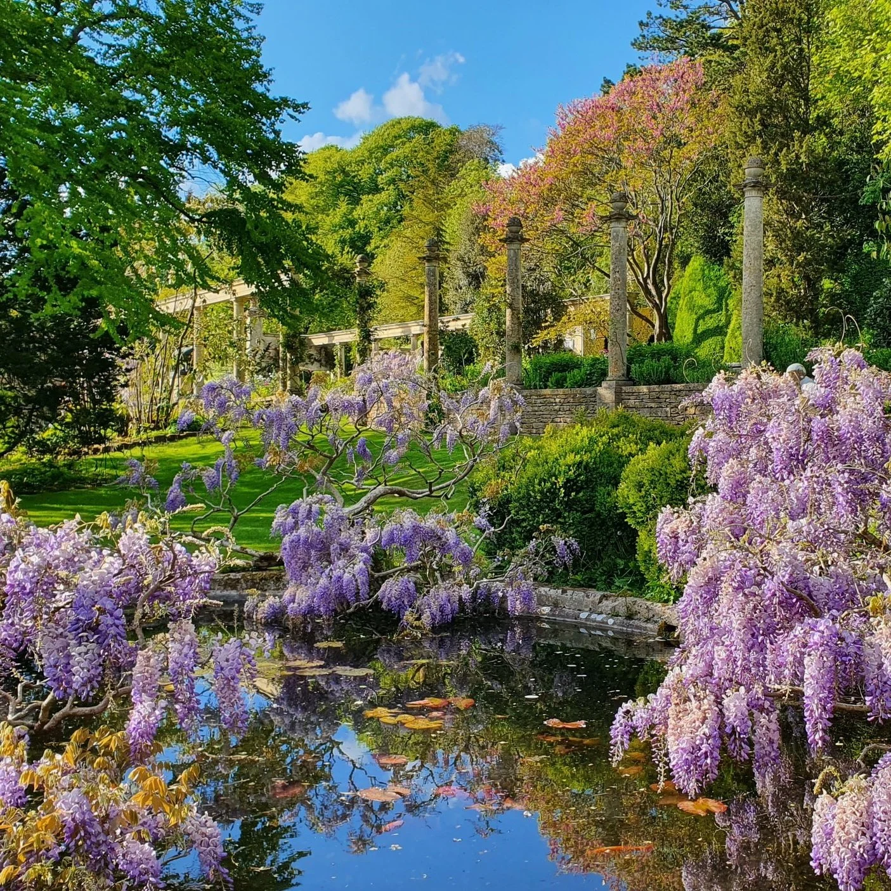
Near the ManorHarold Peto's Italianate terraced garden in a quiet river valley. Opening is seasonal, so check before you go.
Open in Google Maps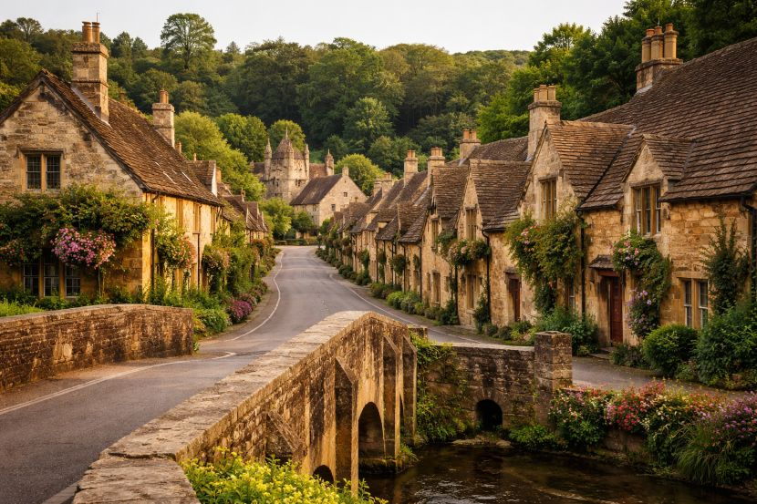
Near the ManorA National Trust village and abbey, familiar from film and TV, with a museum dedicated to the birth of photography.
Open in Google MapsTimes are approximate. Opening times and prices change, so check each attraction before you go.
Most mentioned: Location (186), View (121), Cleanliness (72), Hospitality (64)
Most mentioned: Hospitality (28), Location (23), Indoor spaces (17), Family (14)
Check-in is after 16:00 and check-out is before 10:00 at both properties.
Choose a stay and your dates in the booking form to see the full price, including our direct-booking discount. Then add your details and pay securely by card, Apple Pay or Google Pay. Payments are handled by Stripe, and you're only charged once your dates are confirmed.
Both stays have self check-in, so you can arrive at your own pace. Abbey Views uses a lockbox and Longscroft Manor a key safe on site. We send full instructions before you travel.
Both properties are managed by AIR Development Consultancy Ltd. Get in touch before or during your stay and we'll be happy to help.
The apartment is on the fourth floor. A lift takes you to the third floor, followed by around 15 stairs to the front door. Please bear this in mind if you have mobility needs or heavy luggage.
The nearest recommended car parks are Southgate and Manvers Street, both about a 5-minute walk away.
Early check-in and late check-out may be available on request. Charges apply.
Yes, there is ample free parking on site.
Sorry, dogs are not accepted at Longscroft Manor.
Yes. A travel cot and high chair are available on request, and the bunk room is a favourite with kids.
Choose a stay and your dates to check availability.